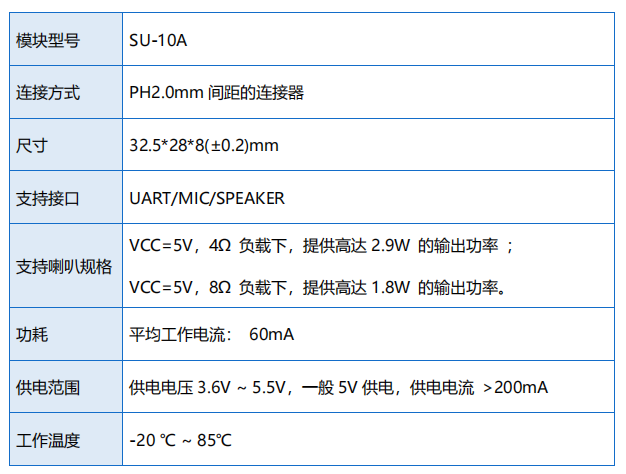

SU-10A
淘宝链接：https://shop379208868.taobao.com
简介
概述
SU-10A 是一款低成本、低功耗、小体积的离线语音识别模组，能快速应用于智能家 居，各类智能小家电，86 盒，玩具，灯具等需要语音操控的产品。

外观尺寸


特性
32bit RISC 内核，运行频率 240M
支持 DSP 指令集以及 FPU 浮点运算单元
FFT 加速器：最大支持 1024 点复数 FFT/IFFT 运算，或者是 2048 点 的实数 FFT/IFFT 运算
内置高速 SRAM，内置 2MB FLASH
内置 3W、单声道 AB 类功放
支持 1 路驻极体麦
支持 5V 电源输入
UART 接口的电压默认 5V，也可支持 3.3V
主要参数
